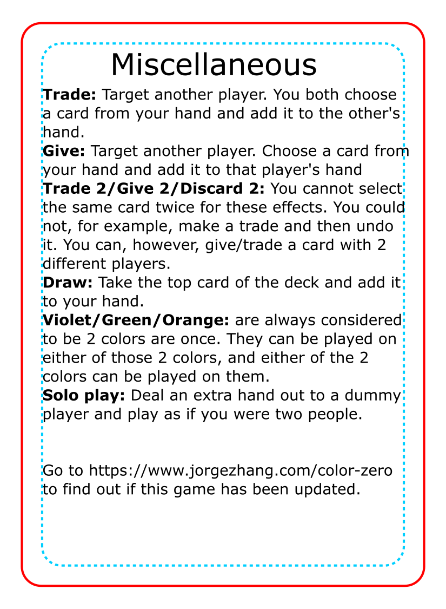
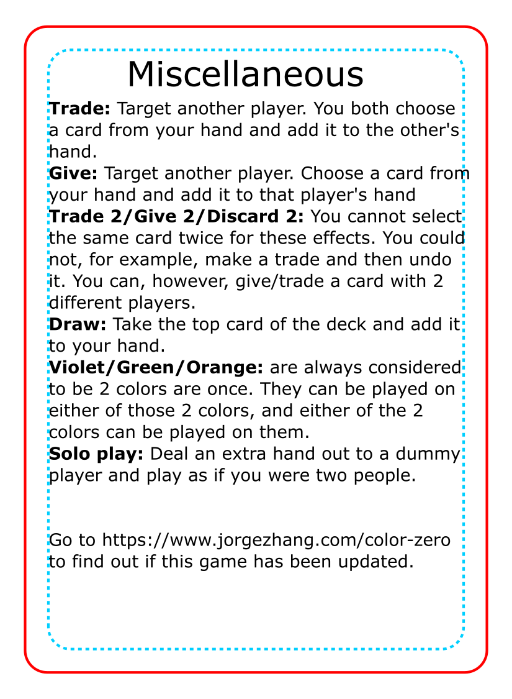

Color Zero
November 22, 2021 by Jorge Zhang
Color Zero is a cooperative card game. Each player starts with a hand of 5 cards, and the goal of the game is for all players to have no cards in their hand.
Designer notes:
I always wanted to try and make a cooperative game, and was thinking about how Hanabi was basically cooperative Solitaire, and The Crew is basically cooperative Bridge. So that got me thinking about other card games that could become cooperative, and the one that came to mind was Uno! I found someone's blog post about playing Uno with cooperative rules and they rated it highly, but nobody as far as I could tell made an original game out of it. I wanted to do something to add to the challenge because I feel like there is not a lot of strategy in Uno, and so Color Zero ended up diverging from Uno quite a bit. They basically just share color matching and the end goal of having no cards in hand. I'm not too sure about the end result because I have not been able to test the game with other people, which is really the whole point of cooperative games. Playing against myself, it seemed like there was a good balance between win/loss. The playtime felt a little bit too short, which is a first.Rules:
 

PnP Files:
Page 1 (print once) download.
Page 2 (print twice) download.
Page 3 (print once) download.
Page 4 (print once) download.
Page 5 (print once) download.